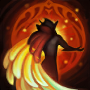

核心裝備
 騎士誓願
騎士誓願 錫柯的聚合之力
錫柯的聚合之力 蘇瑞亞的戰歌
蘇瑞亞的戰歌 黎明法衣
黎明法衣 好戰者鎧甲
好戰者鎧甲
以下為本站 7.2d 校正後的標準配置；實戰仍需依敵方陣容調整。


技能優先：W > E > Q

銳空會定期獲得護盾；與剎雅同隊時，還能加入她的回城召喚。護盾能降低短暫進場換血的風險。
投出羽毛造成魔法傷害；命中敵方英雄或史詩級野怪後會產生治療效果，銳空靠近友軍即可替附近隊友回復生命。
衝向指定位置，短暫延遲後對範圍內敵人造成魔法傷害與擊飛。可從側面或無視野處施放，提高命中率。
舞躍至友方英雄身邊並賦予護盾，短時間內可再次施放；對剎雅使用時護盾更強且冷卻更短。是銳空進場後撤退的核心。
短時間提高跑速，碰到敵方英雄時造成魔法傷害並魅惑。每名敵人只能被同一次施放影響一次。
2技盛大登場擊飛 → 1技命中敵人 → 普攻補傷害 → 3技跳回射手並給盾
最基本的進出場連段。出手前先確認三技能跳回範圍內有友軍，否則會被留在敵陣。
4技加速進場 → 閃現穿過關鍵目標 → 2技落點擊飛多人 → 3技回到隊友身旁 → 點燃壓制回復
先用大絕魅惑限制走位，再把盛大登場放在敵人被拉動後的位置。控制分段施放，比同時命中更能延長輸出時間。
3技先給主力護盾 → 2技擊飛突進者 → 1技命中後準備治療 → 再次3技回到主力 → 4技魅惑後續威脅
面對刺客時不必主動找後排；用雙段護盾與擊飛保住主力，再開大穿過後續進場者。
一級以盛大登場威脅草叢與兵線側面，但沒有隊友能跟上時不要只為消耗跳入。二級取得戰鬥舞踊後，銳空才具備進場再撤回的完整節奏；先從射手或士兵附近起跳，擊飛後立刻回到友軍身旁。癒光飛翎命中英雄後，靠近隊友即可觸發範圍治療，適合換血後回補。
推完線後跟著打野遊走，利用牆邊與無視野角度縮短盛大登場的反應時間。迷心迅步開啟後增加跑速，碰到敵人會魅惑；可先魅惑再接擊飛，也可擊飛後開大穿過多人。每次進場前先確認一名可用戰鬥舞踊撤退的友軍。
不要長時間站在最前面承受消耗，應藏在側翼或隊友身後等待關鍵角度。敵方後排站位集中時，可用閃現或大絕接盛大登場形成多段控制；若己方主力遭切，則以雙段護盾、擊飛與魅惑反開。銳空的價值來自進出戰場，而不是留在敵陣硬扛。
對局名單是本站依英雄機制與目前配置整理的參考，不等同固定勝率。
輔助調整以團隊承傷、解控與保護主力為優先，不為了單一敵人破壞整套功能裝。
觸發：敵方主要輸出集中在射手、物理刺客或普攻型英雄。
蘭頓之兆進一步降低暴擊傷害，適合第二層針對。
觸發：敵方主要威脅來自法師、AP刺客或大量範圍魔法傷害。
改走水星之靴→鎖鏈軍靴，補魔防、韌性與魔法護盾。
自然之力在連續承受魔法技能後能進一步降低魔法傷害。
觸發：敵方硬控能直接抓死己方主力，或你進場後會被連續控制。
改走水星之靴→鎖鏈軍靴，直接補韌性與魔防。
提醒：米凱主要替隊友解控；水星彎刀則是物理英雄自我解控，兩者角色不同。
觸發：敵方有大量治療、吸血或回復，讓己方集火很難完成擊殺。
荊棘之甲讓前排在承受普攻或主動造成傷害時施加重創，同時補物防。
觸發：己方只有一個主要輸出點，且敵方每波團戰都會集中切入他。
日輪的加冕提供即時群體護盾，補上騎士誓願以外的團隊保護。
提醒：保排調整看己方陣容，不是看到敵方刺客就把所有功能裝都換成防裝。
7.2a 輔助路第二批正式攻略：技能名稱與核心機制依 Riot Games 台灣《激鬥峽谷》銳空英雄頁校正，版本基準採官方 7.2a 更新公告；出裝、符文、召喚師技能、技能順序與對局方向依本站輔助資料整合。Tier 維持本站既有輔助路評級。｜v71：套用瑟雷西 v69 輔助固定母版。
本站於 2026-08-27 依 Patch 7.2d 重新檢查此配置。 Tier、出裝、符文與對局屬於 Wild Rift Guide 的整理與分析，不是 Riot Games 官方推薦；版本改動後會再依官方公告與實戰資料校正。